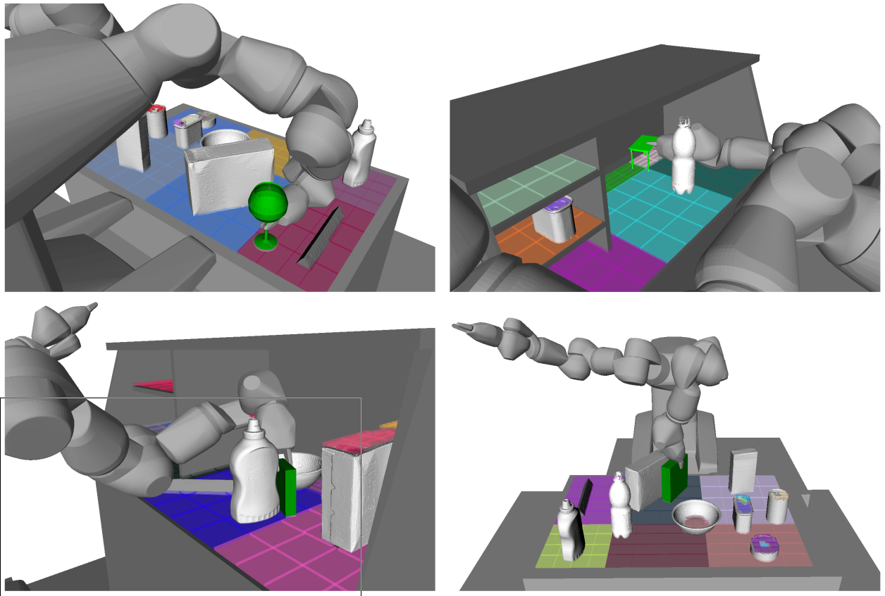

Joshua A. Haustein
About Me

I'm a postdoctoral researcher at the Division of Robotics, Perception and Learning (RPL), Royal Institute of Technology (KTH), Stockholm. Before my current position, I received my PhD in Computer Science at KTH under the supervision of Danica Kragic Jensfelt and Johannes A. Stork. My dissertation is publicly accessible on DiVa. My current research interests lie within the field of manipulation planning for autonomous robots, in particular in grasp, motion and rearrangement planning.
I received both my Bachelor's and my Master's degree in Computer Science from Karlsruhe Institute of Technology (KIT), Germany, in 2011 and 2014 respectively. During my studies I worked at Tamim Asfour's High Performance Humanoid Technologies (H²T) Lab at KIT. For my master's thesis I visited Siddhartha Srinivasa's Personal Robotics Lab at Carnegie Mellon University (CMU) in Pittsburgh, USA, where I worked together with Jennifer King on rearrangement planning for manipulation in clutter.
Publications
-
Multi-Object Rearrangement with Monte Carlo Tree Search: A Case Study on Planar Nonprehensile Sorting
H. Song, J. A. Haustein, W. Yuan, K. Hang, M. Yu Wang, D. Kragic, J. A. Stork
in International Conference on Intelligent Robots and Systems (IROS) 2020 -
Placing Objects with Prior In-hand Manipulation using Dexterous Manipulation Graphs
J. A. Haustein, S. Cruciani, R. Asif, K. Hang, D. Kragic
in Humanoid Robotics (Humanoids) 2019 -
Object Placement Planning and Optimization for Robot Manipulators
J. A. Haustein, K. Hang, J. A. Stork, D. Kragic
in International Conference on Intelligent Robots and Systems (IROS) 2019 -
Non-prehensile Rearrangement Planning with Learned Manipulation States and Actions
J. A. Haustein, I. Arnekvist, J. A. Stork, K. Hang, D. Kragic
in Workshop "Machine Learning in Robot Motion Planning"
at International Conference on Intelligent Robots and Systems (IROS) 2018
Extended manuscript:
Leaning Manipulation States and Actions for Efficient Non-prehensile Rearrangement Planning -
 Affordance Detection for Task-specific Grasping using Deep Learning
Affordance Detection for Task-specific Grasping using Deep Learning
M. Kokic, J. A. Stork, J. A. Haustein, D. Kragic
in Humanoid Robotics (Humanoids) 2017 -
Integrating Motion and Hierarchical Fingertip Grasp Planning
J. A. Haustein, K. Hang, D. Kragic
in International Conference in Robotics and Automation (ICRA) 2017 -
On the Evolution of Fingertip Grasping Manifolds
K. Hang, J. A. Haustein, M. Li, A. Billard, C. Smith and D. Kragic
in International Conference in Robotics and Automation (ICRA) 2016 -
 Kinodynamic Randomized Rearrangement Planning via Dynamic Transitions Between Statically Stable States
Kinodynamic Randomized Rearrangement Planning via Dynamic Transitions Between Statically Stable States
J. A. Haustein, J. King, S. S. Srinivasa, T. Asfour
in International Conference in Robotics and Automation (ICRA) 2015 -
Nonprehensile Whole Arm Rearrangement Planning on Physics Manifolds
J. King, J. A.Haustein, S. S. Srinivasa, T. Asfour
in International Conference in Robotics and Automation (ICRA) 2015
Project Videos
Automated Stock Picking: Prototype development
Team KTH @ Amazon Picking Challenge 2016 (Playlist of 5 videos)
Contact
Email: haustein at kth dot se
Phone: +46 (0)8790 6138
Address: Teknikringen 14, SE-100 44 Stockholm, Sweden